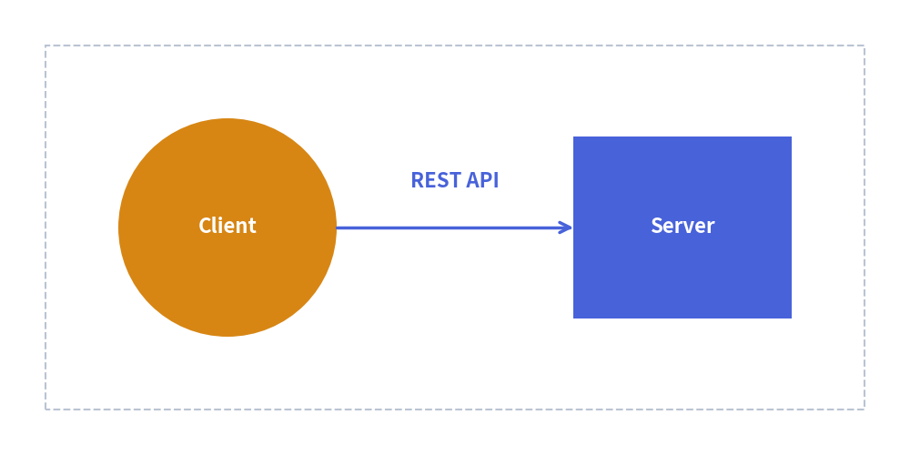

Quick Start Guide
Drawlib makes creating publication-ready technical diagrams intuitive and reproducible.
You can author diagrams either as standalone Python scripts (.py) or as embedded Markdown blocks (```drawlib).
The Standard 5-Step Drawing Workflow
Every Drawlib illustration follows a clean, predictable lifecycle:
- Import APIs: Import canvas management, drawing primitives, and styling presets.
- Setup Canvas: Initialize canvas dimensions (
width,height) viasetup(). - Draw Structural Containers: Create boundary boxes, cloud regions, or background grids.
- Draw Entities & Connectors: Add shapes, icons, and lines with semantic styles and labels.
- Save / Export: Save the drawing to an image file via
save(), or let the Document Builder render it inline automatically.
1. Standalone Python Script
Create a Python script named client_server.py:
from drawlib.canvas import save, setup
from drawlib.lines import line
from drawlib.shapes import circle, rectangle
from drawlib.styles import Styles
from drawlib.text import text
# Step 2: Setup canvas dimensions (Cartesian space: 100 wide x 50 high)
setup(width=100, height=50)
# Step 3: Draw background boundary container
rectangle((50, 25), width=90, height=40, style=Styles.muted_dashed)
# Step 4: Draw main entities and connectors
circle((25, 25), radius=12, style=Styles.accent_flat, text="Client", textstyle=Styles.white_bold)
rectangle((75, 25), width=24, height=20, style=Styles.primary_flat, text="Server", textstyle=Styles.white_bold)
# Connection line with arrowhead
line((37, 25), (63, 25), arrowhead="->", style=Styles.bold)
text((50, 30), "REST API", style=Styles.bold)
# Step 5: Save image (defaults to client_server.png)
save()
Running and Previewing
Run the script directly with Python:
$ uv run python client_server.py
# Generates client_server.png
Or use the unified drawlib show CLI command to export headless images or inspect coordinate overlays:
# Export directly to a specified output file
$ uv run drawlib show client_server.py -o output.png
# Overlay a visual coordinate grid (-g) to check element spacing
$ uv run drawlib show client_server.py -g -o output_grid.png
2. Embedded Markdown Document
Inside any Markdown document (such as doc.md), simply embed the code block with drawlib:
# Architecture Overview
Here is our primary service flow:
```drawlib 600px center caption:"Client-Server REST Communication"
from drawlib.canvas import setup
from drawlib.shapes import rectangle, circle
from drawlib.lines import line
from drawlib.text import text
from drawlib.styles import Styles
setup(width=100, height=50)
rectangle((50, 25), width=90, height=40, style=Styles.muted_dashed)
circle((25, 25), radius=12, style=Styles.accent_flat, text="Client", textstyle=Styles.white_bold)
rectangle((75, 25), width=24, height=20, style=Styles.primary_flat, text="Server", textstyle=Styles.white_bold)
line((37, 25), (63, 25), arrowhead="->", style=Styles.bold)
text((50, 30), "REST API", style=Styles.bold)
```
When compiled with drawlib build html or drawlib build markdown, the code fence is executed and replaced with the rendered image:

3. Key Rules for Smooth Drawing
setup()is Mandatory: Always callsetup(width=..., height=...)at the start of your drawing block.- Handling
save()in Markdown Blocks: In Markdown embedded blocks, callingsave()is optional because Drawlib captures the canvas automatically (and calls tosave()are safely treated as no-ops). However, writingsave()(without arguments) in complete examples is recommended for 100% copy-paste compatibility with standalone.pyscripts. - Use Semantic Styles: Avoid hardcoding RGB values like
(255, 0, 0). LeverageStyles.primary_flat,Styles.accent_flat, andStyles.boldto maintain clean visual harmony.